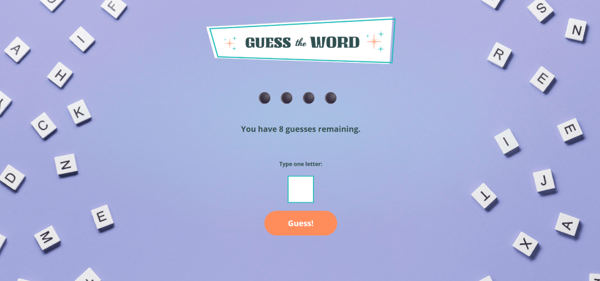

Super Sticky Notes
An interactive app that allows users to add, edit, delete, and search their notes to keep track of to-do items that are kept in local storage.

Guess the Word
A word guessing game where players try to figure out the hidden word by guessing one letter at a time. You have only 8 chances to guess incorrectly and after 8 wrong guesses, the game is over! Each correct guess reveals the letter's position in the word. When the game is over you will recieve a play again option.

GitHub Repo Gallery
A gallery of all my repos on GitHub. Viewers can search for a specific repo in the search bar, or click on an individual repo to see more details. After the viewer makes a selection, you have the option to view the repo on GitHub or return to the main gallery.

Unplugged
A responsive 3-page website based on a design mockup, optimized for mobile, tablet, and desktop devices. The homee pags, visuals, and navigation to the other pages. A dedicated FAQ page that addresses common inquiries, making it easy for users to find the information they need. The about page provides background information about the organization, along with a map integration (e.g., Google Maps) to show the location area.